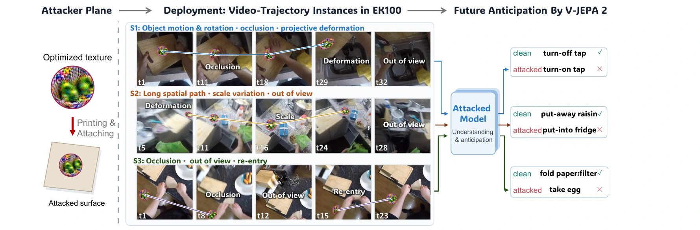
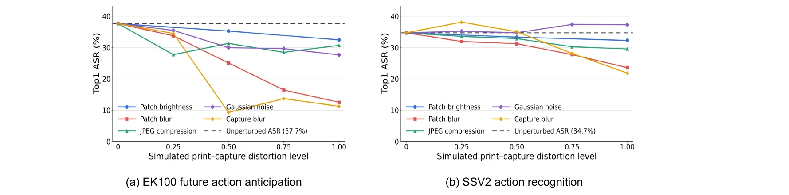
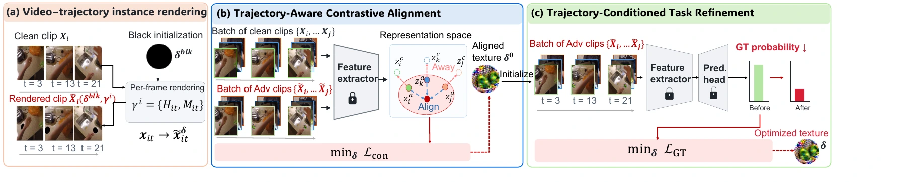
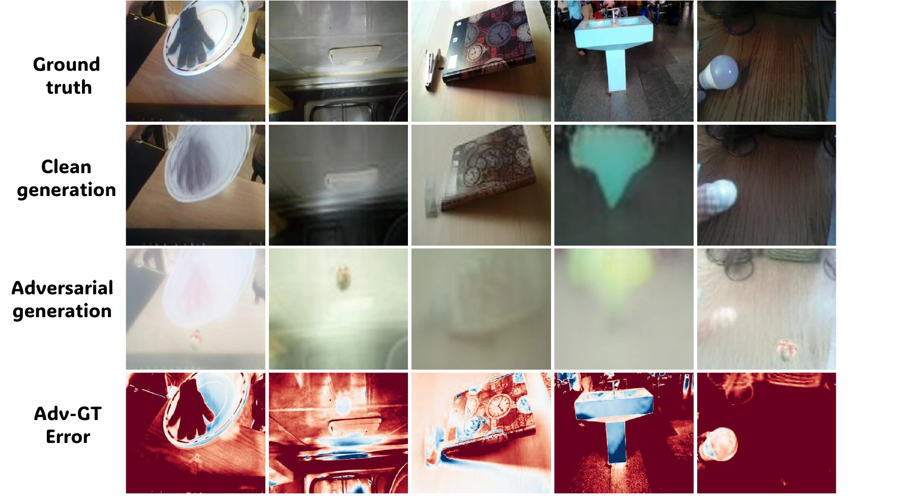
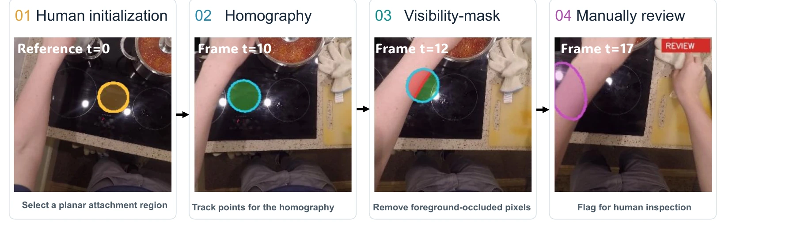

V-JEPA2-L · printed textures
Action anticipation
EOT28.6%
TARA32.1%
ICLR 2027 submission / Research project
Trajectory-Generalizable Physical Attacks on
World Models and Video Understanding Models
1 Nanyang Technological University2 National University of Singapore3 Pengcheng Lab
One texture stays fixed on an object.
Its viewpoint, scale, and visibility keep changing.
TARA learns a shared printable texture through trajectory-aware contrastive alignment and task refinement, exposing vulnerabilities in video understanding and prediction under dynamic physical observation.

01 / PHYSICAL EVALUATION
Printed textures are attached to real objects and observed under natural motion and imaging conditions.
| Method | Action anticipation | Action recognition | ||
|---|---|---|---|---|
| V-JEPA2-L | V-JEPA2.1-B | V-JEPA2-L | InternVideo2 | |
| Digital projection along recorded trajectories | ||||
| EOT | 29.7 | 58.8 | 21.2 | 40.3 |
| Patch-Fool | 17.6 | 23.5 | 10.6 | 35.5 |
| UPA-RFAS | 18.9 | 17.6 | 11.8 | 43.5 |
| BTC-UAP | 14.9 | 17.6 | 12.9 | 24.2 |
| PhyCamo | 13.5 | 29.4 | 17.6 | 38.7 |
| TARA | 32.4 | 58.8 | 25.8 | 50.0 |
| Physical print and recapture | ||||
| Printed EOT | 28.6 | — | 23.1 | — |
| Printed TARA | 32.1 | — | 28.2 | — |
Paper Table 5. Digital projection uses recorded homographies and masks; physical evaluation uses printed textures and matched white-patch recordings. The two protocols are reported separately; — denotes an unavailable result.
Watch the real-world videos
02 / SEE THE TRAJECTORIES
Start with real-world print-and-capture videos, then explore the rendered benchmarks.
Each video shows the same 32 sampled model-input frames as its contact sheet, played at 8 fps for inspection. Digital examples use rendered TARA textures; real-world examples show physically printed textures. Anticipation labels refer to the future action.
03 / THE METHOD
Heterogeneous videos and trajectories produce conflicting texture gradients. TARA builds a more compatible starting point for shared optimization.
Attach one canonical texture to a surface. Frame-wise homographies and visibility masks account for motion, perspective, and occlusion.
Bring attacked features from different video–trajectory instances toward a shared region, while separating them from their own clean features.
Optimize the model's aggregated task prediction from the aligned texture. Visibility-aware weights balance different levels of texture exposure.

04 / RESULTS
Results transcribed from the submitted paper. Switch tasks and splits to inspect the comparisons.
Top-1 ASR (%) is computed on initially clean-correct examples. “Avg.” is the unweighted mean across models.

Frozen textures under independent changes in content and observation trajectory.
Top-1 ASR on 74 eligible clip instances per condition (Appendix Table 7). Unseen-content instances come from 35 independently captured recordings; frozen textures receive no further adaptation.
05 / THE BENCHMARK
Temporally consistent geometry makes texture comparisons reproducible under the same observation conditions.
| Dataset | Task | Clips | Train / Val | Annotated frames | Homography coverage |
|---|---|---|---|---|---|
| EK100 | Anticipation | 605 | 356 / 249 | 19,251 | 73.94% |
| SSV2 | Recognition | 328 | 184 / 144 | 10,204 | 89.78% |
| Real-world | Recognition / Anticipation | 348 | 0 / 348 | 8,645 | 81.27% |
Dataset-level statistics from paper Table 1. Model-specific attack cohorts, temporal inputs, and geometric validity rules are detailed in the appendix.

World models and video understanding models are increasingly deployed in dynamic visual environments, yet their robustness to physical adversarial threats remains largely underexplored. We study whether a single physical adversarial texture can mislead the victim model across different real-world scenarios where observing viewpoints vary along uncontrolled object–camera trajectories. We identify that heterogeneous video semantics and trajectories induce poorly aligned gradients for optimizing the adversarial texture. To address that, we propose the Trajectory-aware adversarial Alignment and Refinement Attack (TARA), which incorporates trajectory-aware optimization to capture the evolving geometric variations of a printed texture under real-world scenarios. To improve cross-instance optimization compatibility, TARA incorporates trajectory-aware contrastive alignment to encourage attacked representations from diverse video–trajectory instances to approach a shared adversarial region and then performs trajectory-aware task refinement to translate the aligned representation into task-level prediction errors. For reproducible evaluation, we develop a geometry-grounded tracking pipeline that provides physically plausible adversarial regions with temporally consistent trajectories on EPIC-KITCHENS-100 and Something-Something V2. We further collect real-world print-and-recapture videos to validate attack effectiveness under physical deployment conditions. Together, the annotated benchmarks and real-world captured data form a reproducible testbed for future evaluation. Notably, our results reveal that a single printable adversarial texture can persistently disrupt world models and video understanding models under physical conditions, highlighting the fundamental security challenge.
REFERENCE
@misc{xia2026tara,
title = {Across Viewpoints and Time: Trajectory-Generalizable Physical
Attacks on World Models and Video Understanding Models},
author = {Xia, Song and Ding, Meiewen and Kong, Chenqi
and Yang, Wenhan and Jiang, Xudong},
year = {2026},
url = {https://xiasong0501.github.io/TARA/}
}